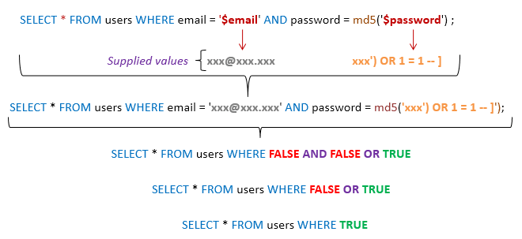
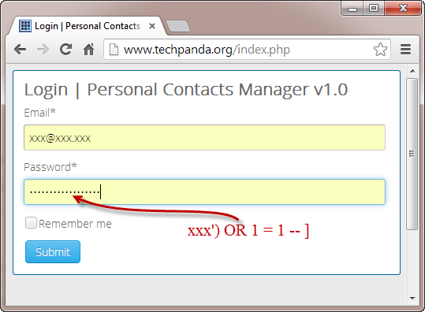

SQL injection or SQLi is a web vulnerability that allow the attacker to access a database, and look, modify, or delete records that restrict all information security elements, the CIA triad (confidentiality, integrity, and availability).
The attacker inject the input in a form by some special characters, so to cross the security protection. The special characters that the attacker use is (' or 1=1--)
The (' or 1=1--) syntax means adding this syntax to the SQL statement. As we now that 1 is equal 1, and or if an input is TRUE then whenever the other input is FALSE or TRUE, it will be equal TRUE. The dashes (--) after 1=1 says that anything after will be commented.
Detecting SQL injection is by checking the input field by looking for errors or anomalies or any special characters. Also, we detect SQLi by searching for Boolean conditions such as 1=1. Finally, looking at the differences of the payload based on the delay.
SQL injection happened because concatenting strings in SQL statement, to solve this we will use parametrized queries. Parameterized queries can be used for any situation where untrusted input appears as data within the query, including the WHERE clause and values in an INSERT or UPDATE statement. For a parameterized query to be effective in preventing SQL injection, the string that is used in the query must always be a hard-coded constant, and must never contain any variable data from any origin.